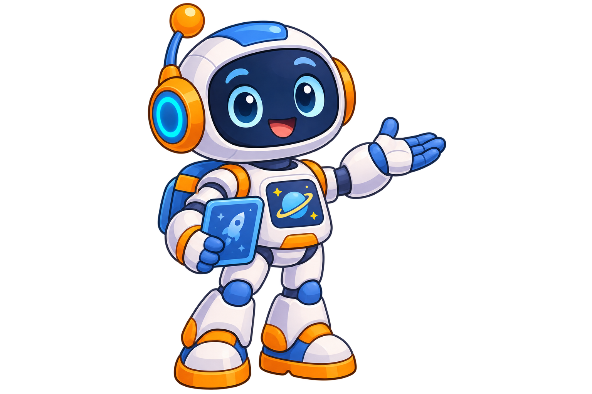

ТВОЯ ПЕРВАЯ ЭКСПЕДИЦИЯУдивительный
Удивительный
космос
За знакомыми звёздами — целая Вселенная.
Исследуй её вместе с роботом Астро!
4 направления12 открытийБез спешки

Привет! Полетим исследовать?Куда отправимся?
Выбери направлениеИзучи подсказку → узнай объект → пополни атлас
ИНСТРУКТАЖ ПЕРЕД ПОЛЁТОМ
Каждая миссия начинается с знакомства. Затем Астро предложит два небольших задания.
Три миссии исследователя
Можно проходить в любом порядке- 1. Знакомство
- 2. Узнай объект
- 3. Проверь себя
КОЛЛЕКЦИЯ ТВОИХ ОТКРЫТИЙ
Космический атлас
Выбери открытый объект, чтобы рассмотреть изображение и перечитать факт.